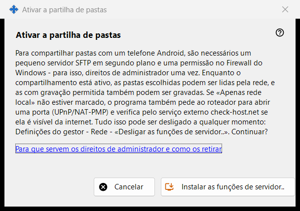
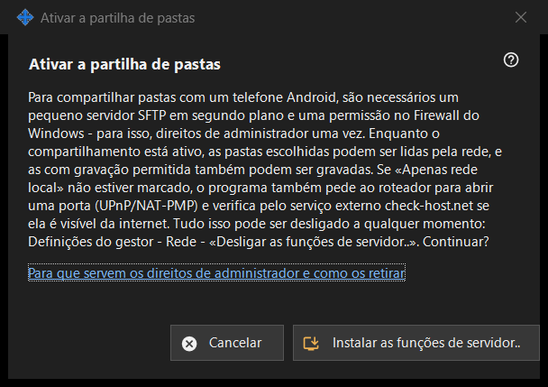

Ativar o compartilhamento de pastas
Finalidade
Pede autorização para instalar o lado do servidor do compartilhamento: um pequeno servidor SFTP em segundo plano e uma exceção da Firewall do Windows. Ela se abre a partir do botão «Ativar as funções de servidor..» da janela principal e dos assistentes, e precisa de direitos de administrador uma única vez.


Nesta ordem
- Leia a explicação.
- Pressione «Instalar as funções de servidor..».
- Confirme o pedido de administrador do Windows.
- Aguarde a linha de resultado; em caso de sucesso, a janela indica que o compartilhamento de pastas está ativado.
- Pressione «Cancelar» para sair sem alterações.
Os elementos
O que faz
Compartilhar pastas com um celular Android requer um pequeno servidor SFTP em segundo plano e uma permissão da Firewall do Windows. Enquanto o compartilhamento está ativo, as pastas escolhidas podem ser lidas pela rede, e as abertas para escrita também podem ser gravadas. Se a opção só rede local não estiver marcada, o programa também pede ao roteador que abra uma porta (UPnP/NAT-PMP) e verifica o endereço através de um serviço externo.
Resultados
«Concluído. O compartilhamento de pastas está ativado.»; «Compartilhamento não ativado - os direitos de administrador não foram concedidos.» quando o pedido é recusado (nada muda e pode tentar de novo); ou uma falha da firewall, em que a janela pede para tentar novamente e enviar o registro: Configurações do gerenciador - Ajuda - «Exportar registros para análise».
Direitos de administrador e como retirá-los
O link explica para que servem os direitos. Para desfazer, use «Desligar as funções de servidor..» nas configurações do gerenciador: o compartilhamento para, os celulares conectados são desconectados e a permissão da firewall é removida. A lista de pastas e a senha permanecem, e tudo pode ser ativado de novo.
Configurações do gerenciador · Configurações de compartilhamento SFTP · Configurações do servidor de troca